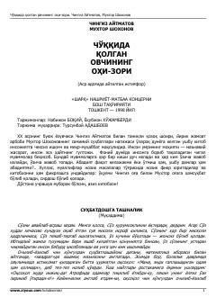

CQChingiz Aytmatov va Muxtor Shoxonovning hayotiy va falsafiy mavzulardagi samimiy suhbatlari.
Ushbu kitob buyuk yozuvchi Chingiz Aytmatov va taniqli shoir Muxtor Shoxonovning samimiy suhbatlari asosida yaratilgan. Mualliflar inson hayoti, ma'naviy jasorat, Vatan va milliy qadriyatlar kabi nozik masalalar yuzasidan o'zaro fikr almashadilar.